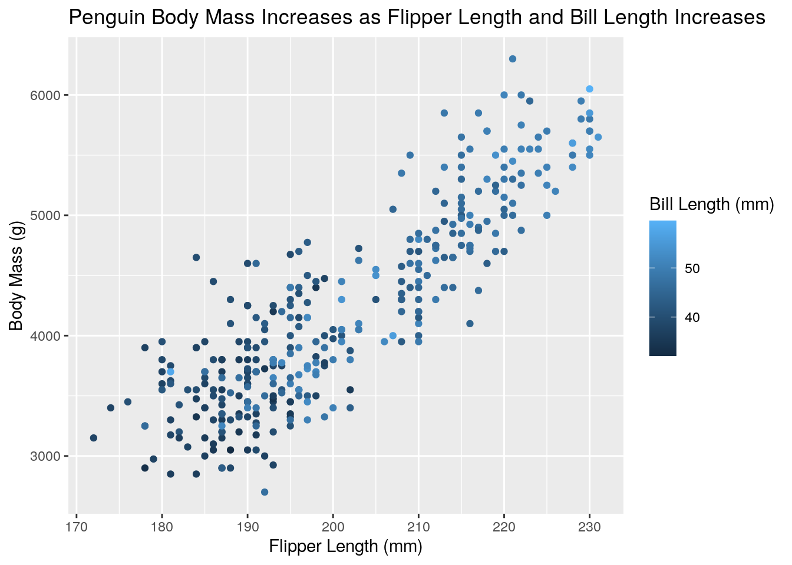

January 1, 0001
Reticulate: Introduction
Reticulate is a great tool; it allows you to write code chunks in multiple languages and have these code chunks be able to communicate with eachother. Check out the list of languages you can use with this feature:
#This is an R code chunk.
names(knitr::knit_engines$get())## [1] "awk" "bash" "coffee" "gawk" "groovy"
## [6] "haskell" "lein" "mysql" "node" "octave"
## [11] "perl" "psql" "Rscript" "ruby" "sas"
## [16] "scala" "sed" "sh" "stata" "zsh"
## [21] "highlight" "Rcpp" "tikz" "dot" "c"
## [26] "cc" "fortran" "fortran95" "asy" "cat"
## [31] "asis" "stan" "block" "block2" "js"
## [36] "css" "sql" "go" "python" "julia"
## [41] "sass" "scss" "theorem" "lemma" "corollary"
## [46] "proposition" "conjecture" "definition" "example" "exercise"
## [51] "proof" "remark" "solution"Reticulate: Example
So, imagine there's a dataset you want to work with in python, but the dataset is only available in R. Reticulate gives you a way to overcome this issue! For example, say we want to use the R dataset PlantGrowth.
#This is an R code chunk.
library(reticulate)
library(ggplot2)
plantgrowth<-PlantGrowthNow that we've called our dataset in R, reticulate allows us to access the dataset from R in python and share things between the two!
#This is a Python code chunk.
r.plantgrowth## weight group
## 0 4.17 ctrl
## 1 5.58 ctrl
## 2 5.18 ctrl
## 3 6.11 ctrl
## 4 4.50 ctrl
## 5 4.61 ctrl
## 6 5.17 ctrl
## 7 4.53 ctrl
## 8 5.33 ctrl
## 9 5.14 ctrl
## 10 4.81 trt1
## 11 4.17 trt1
## 12 4.41 trt1
## 13 3.59 trt1
## 14 5.87 trt1
## 15 3.83 trt1
## 16 6.03 trt1
## 17 4.89 trt1
## 18 4.32 trt1
## 19 4.69 trt1
## 20 6.31 trt2
## 21 5.12 trt2
## 22 5.54 trt2
## 23 5.50 trt2
## 24 5.37 trt2
## 25 5.29 trt2
## 26 4.92 trt2
## 27 6.15 trt2
## 28 5.80 trt2
## 29 5.26 trt2It also works the other way around! For example, say there is a python dataset we wish to access in R. In this case, say we want to access the python penguins dataset and build a plot of it in R. First, you want to load up the penguins dataset in python.
#This is a Python code chunk.
import seaborn as sns
penguins = sns.load_dataset('penguins')Next, you want to grab the penguins dataset from the python code chunk and save it as something in R
#This is an R code chunk.
penguins_r<-py$penguins
#note: Sometimes you'll get errors at this step if you're not working locally- don't worry! It will still knit just fine.Now, you can build your plot of the python dataset in R! For example, here is a plot comparing penguin flipper length in millimeters against body mass in grams, colored by bill length in mm.
#This is an R code chunk.
library(ggplot2)
ggplot(penguins_r, aes(x=flipper_length_mm, y=body_mass_g, color=bill_length_mm))+geom_point()+xlab("Flipper Length (mm)") +ylab("Body Mass (g)")+ggtitle("Penguin Body Mass Increases as Flipper Length and Bill Length Increases")+ labs(color="Bill Length (mm)")## Warning: Removed 2 rows containing missing values (geom_point).